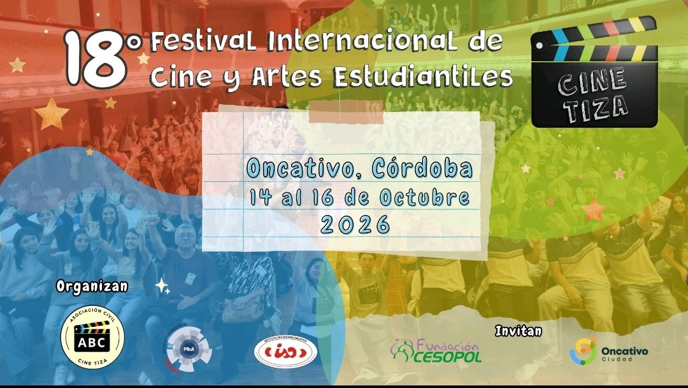

Festival Internacional de Cine y Artes Estudiantiles
UNA PANTALLA PARA LAS NUEVAS VOCES.
Cine Tiza es un multiespacio educativo, cultural y audiovisual nacido en el Instituto Secundario Oncativo (ISO), en la provincia de Córdoba, Argentina. Desde 2009, propicia el encuentro, la libre expresión y la producción artística entre adolescentes y jóvenes de escuelas secundarias de todo el país y el mundo.
Aquí el aula se transforma en set de filmación, las ideas en guiones y las inquietudes juveniles en historias proyectadas en pantalla grande.
Un festival que trasciende la pantalla para convertirse en un espacio de formación, amistad y comunidad.
Cortometrajes de ficción, documental, animación y videoclip realizados íntegramente por estudiantes secundarios en salas oficiales.
Espacios prácticos de formación en guión, cámara, sonido directo y animación dictados por profesionales del Polo Audiovisual.
Encuentros inspiradores y rondas de debate entre directores consagrados, docentes tutores y jóvenes realizadores.
Reconocimiento a la creatividad estudiantil con estatuillas oficiales y pases a festivales internacionales como Cinedfest (España).
Intercambio de experiencias y convivencia entre delegaciones educativas de diversas provincias argentinas.
Puente de articulación con el certamen internacional y la red iberoamericana de festivales de cine joven.
Cortometrajes que conmueven, cuestionan y transforman realidades.
Del 15 al 17 de Octubre de 2026 en Oncativo, Córdoba.
En el corazón de la provincia de Córdoba, donde la pasión por el cine estudiantil late con fuerza propia.
El festival tiene sus sedes centrales en el Centro Cultural Gral. San Martín, la legendaria Sala Cine Teatro Victoria y las instalaciones del Instituto Secundario Oncativo (ISO).
Una ciudad que abre sus puertas a delegaciones estudiantiles de toda la Argentina, ofreciendo hospitalidad, calidez y un escenario cultural vibrante.
Imágenes que capturan la emoción, el rodaje y el brillo de cada función.
La convocatoria para estudiantes de nivel secundario se encuentra abierta. Presentá tu cortometraje de ficción, documental, animación o videoclip.